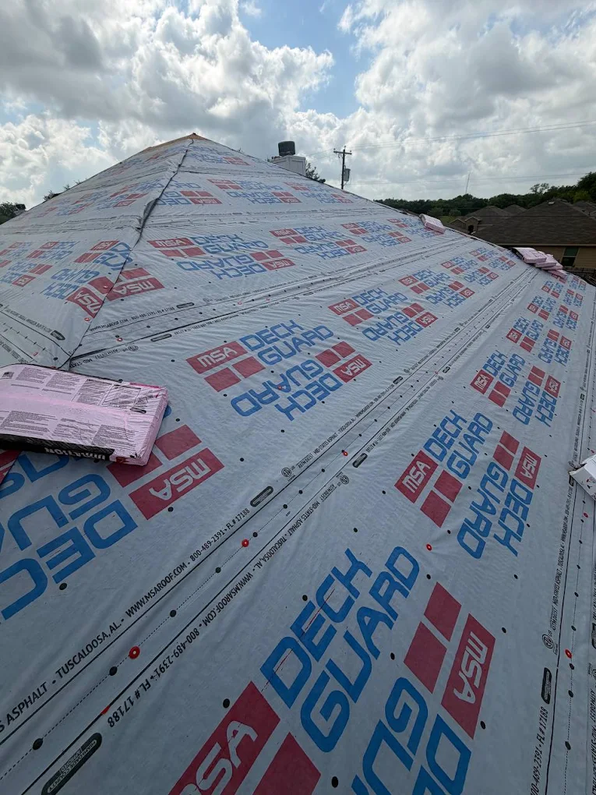
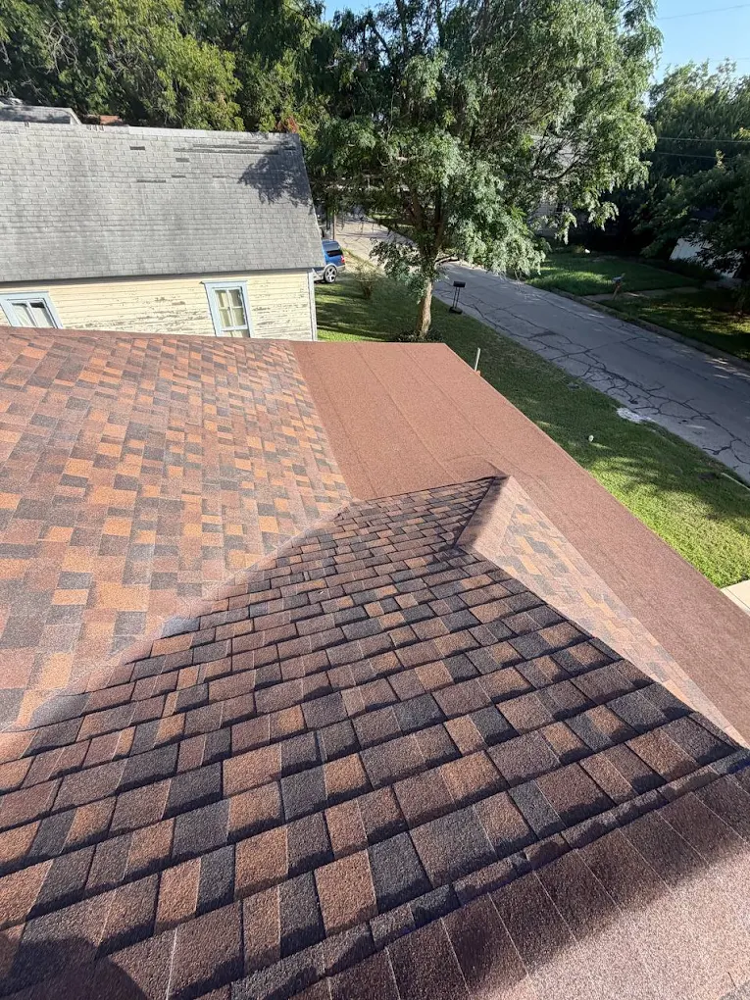

How We Build A Roof
From Tear-Off to Turnkey
01

Everything Comes Off
Old shingles, old felt, all of it — stripped down to bare decking. Any rotted or soft boards get replaced before anything new goes down. We don't build on top of a problem.
02

The Roof Gets Sealed
A full synthetic underlayment goes down next — every seam, every fastener point sealed tight. This is the layer that keeps water out long before a single shingle is laid.
03

Then We Finish It Right
Dimensional shingles installed to manufacturer spec — correct nailing pattern, proper ridge ventilation, clean flashing. This is the step most crews rush. We don't.